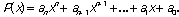
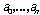
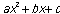
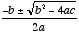
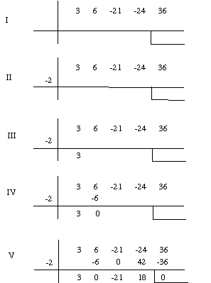

Problem B
Polynomial Roots
Let

be a nth degree polynomial with coefficients . If z is a root of P(x), that is, P(z)=0, then the first degree polynomial (x-z) divides P(x), that is, P(x)=(x-z)Q(x), where Q(x) is a polynomial with a degree less than n. In the same way, if w is a root of Q(x), then Q(x)=(x-w)R(x), and, obviously, P(x)=(x-z)(x-w)R(x), which means that w is a root of P(x), also. This means that the more roots of P(x) we know, the easier it is to know the ones we don't know, because we are obtaining polynomials of decreasing degrees. When, finally, we obtain a 2nd degree polynomial,  , as a result of the division, we have a very simple way of finding its two roots: we use the quadratic formula  to compute them.
How can we find Q(x), such that P(x)=(x-z)Q(x), having P(x) and one of its roots, z? That is, how can we divide P(x) by (x-z)? We describe here the Ruffini rule, a simple process for dividing polynomials by 1st degree polynomials of the form (x-z):

At the end, we obtain on the third line the coefficients of
the resulting polynomial - Q(x) -
and the remainder of the division (in this case is zero because
we are dividing P(x) by one of its
roots). In figure V we see the coefficients of Q(x).
So, . The
remainder of the division is zero, as expected.
Problem
Your task consists of writing a program that, given the
coefficients of a nth degree polynomial, and n-2 roots of that
polynomial, finds the other two roots. Assume that all roots are
real.
Input
The input is one text file (standard input) that has, in the
first line, the number k of polynomials that are to be
processed. The next 3*k lines contain the information
about the k polynomials. The first of each set of three
lines contains the value n of the polynomial degree; the
second of each set of three lines contains n+1 values separated
by spaces (the coefficients of the polynomial), and the third of
each set of three lines contains n-2 values which represent n-2
roots of the polynomial. You know that there can be some repeated
roots; the third line of each set of three lines contains exactly
n-2 root values, even if some of them are repeated.
Output
The output file must have k*2 lines, each pair
containing each of the two unknown roots of the polynomial. Each
pair of roots must be in decreasing order. These values must be
rounded to one decimal place.
Sample Input
3 3 2 -15 36 -27 3 6 1 -3 -5 15 4 -12 0 1 -2 0 2 3 1 2.3 1 -0.3 -1.5
3.0 1.5 3.0 -1.0 0.2 -1.0